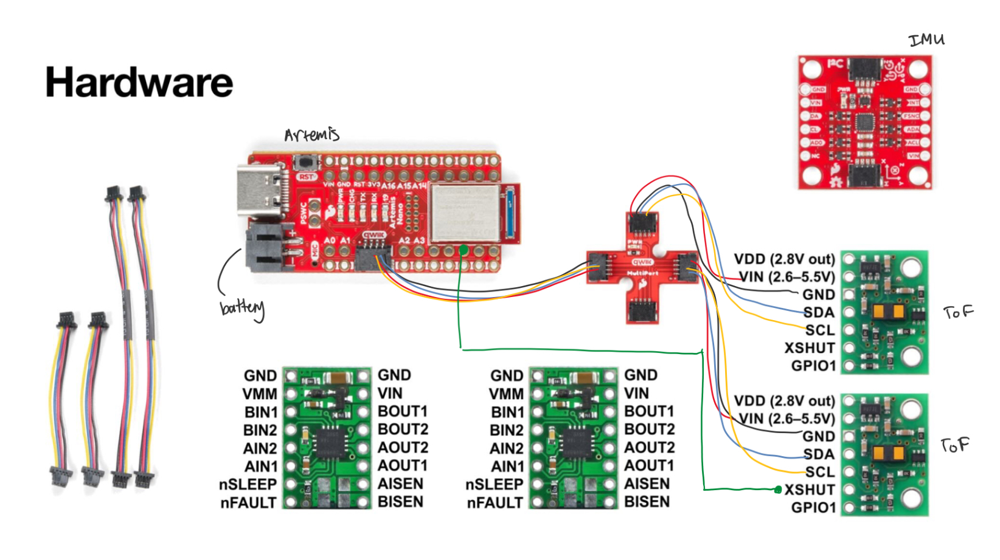
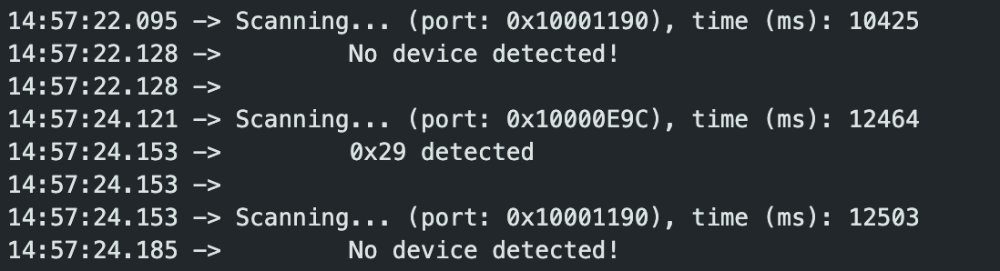
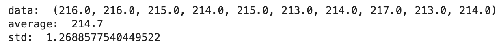
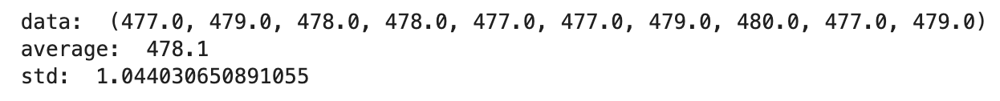
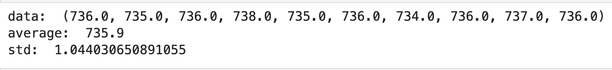
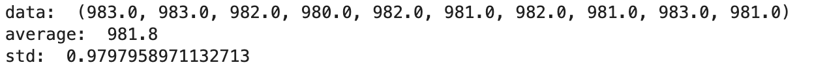
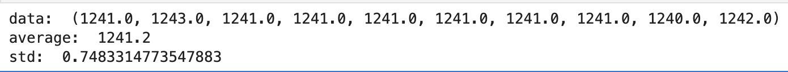
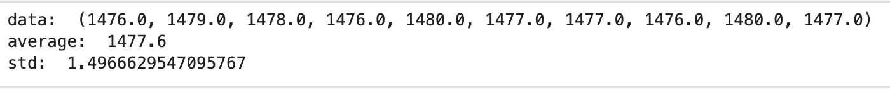
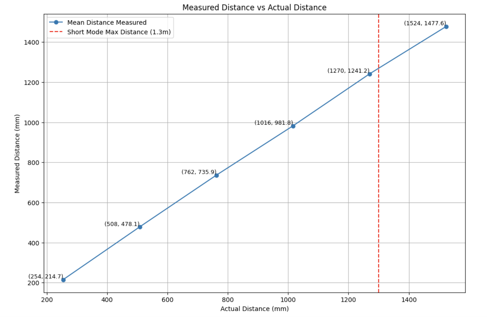
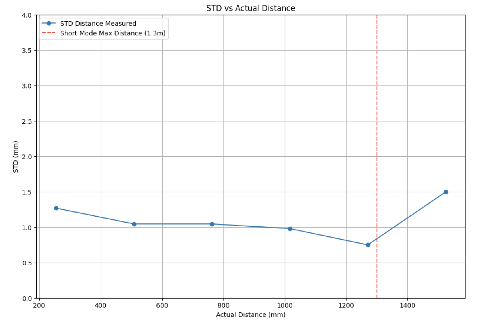

Lab 3: ToF Sensors
02.11.2025 - 02.25.2025
Setup
The objective of Lab 3 was to configure the time of flight sensors, which measure distance to aid with obstacle detection and navigation. Lab tasks included soldering components to the Artemis and analyzing data and communication speed.
Before beginning the lab, I planned out how I was going to wire the components together, which can be seen in the figure above. I decided to place one ToF sensor on the front of the car, and the other on the side of the car. This would be helpful when detecting obstacles, as this placement would allow the robot to see in front and to the side. Because we are using two ToF sensors, they will have the same I2C address by default. In order to measure data using both of the sensors, I used the XSHUT pin on one of the sensors in order to temporarily shut off one of the sensors and change the I2C address of the other.
Soldering
In this lab, I had to solder a connector to the battery, two QWIIC connectors to the ToF sensors, and the XSHUT pin of one of the sensors to one of the GPIO pins on the Artemis.
Battery
First, I soldered the battery wires to the JST jumper wires. I checked the polarity on the Artemis port to ensure that I was connecting the wires correctly, and then tested the battery by sending BLE data from the Arduino IDE to my computer (using previous lab code).

ToF Sensors
Following my wiring diagram plan, I soldered the ToF sensors to two QWIIC connectors. For the second sensor, I soldered a green wire from the XSHUT pin to pin 6 on the Artemis.

I2C Address
I installed the SparkFun VL53L1X 4m laser distance sensor library in Arduino IDE. Next, I ran Example05_Wire_I2C and found that the address was 0x29. This is different from the address listed in the datasheet, 0x52, because the address is shifted right one bit (0x52 >> 1 = 0x29) to account for the rightmost bit being used to identify if data is being read or written.
Three Modes
The ToF sensors have three modes: short, medium, and long. I looked into the pros and cons of each mode, and made a decision about which mode to use.
Discussion
Short: The short distance mode has a maximum distance of 1.3 meters and is the least susceptible to ambient light. Overall, this mode has greater accuracy and less noise than the other modes.
Long: The long distance mode has a maximum distance of 4 meters but is the most susceptible to ambient light.
Medium: This mode is only available with the Polulu VL53L1X Library, and therefore I did not take this mode into consideration. It has a detection distance between the short and long, and also has noise resistance between short and long.
I chose to use short mode for my robot because 1.3 meters is enough distance to detect obstacles, and the better resistance to noise will be greatly beneficial for when I run the car in different settings.
Testing
To test the ToF sensors at short mode, I taped one of the sensors flat on my laptop and used a tape measure to set up different distances from the wall. I decided to take 10 sensor measurements at six different distances:
10 in (254 mm)
20 in (508 mm)
30 in (762 mm)
40 in (1016 mm)
50 in (1270 mm)
60 in (1524 mm)
To check the accuracy of the sensors, I plotted the average values I calculated against the actual distances, shown below. From the plot, it can be seen that the measured distance has the greatest deviation from the actual distance at 1524 mm, which is outside of the short mode range. I also observed that the measured values were consistently less than the actual values, which could indicate a human error that remained throughout the data measurements. Because the experiment was manually set up, there was a lot of room for error, such as my laptop screen not being exactly aligned with the measuring tape distance due to a small angle deviation.
Next, in order to determine repeatability, I took the standard deviations of the measured sensor data and plotted it against the actual distances, shown in the figure below. Similar to the trend in the plotted average measurements, I observed that the standard deviation was its highest at 1524 mm, which is outside of the short mode range. The other standard deviation values remained close to 1.
In order to measure ranging time, I took the start and end times at the beginning and end of each iteration of the data collection loop. I then found the difference and printed that value out to the Serial Monitor. From one test run, I noted that the ranging time hovered around the high-90s (data shown below). These values were higher than I was expecting, which indicated that there was room for optimization within the data collection.

Two Sensors Working
The next task was